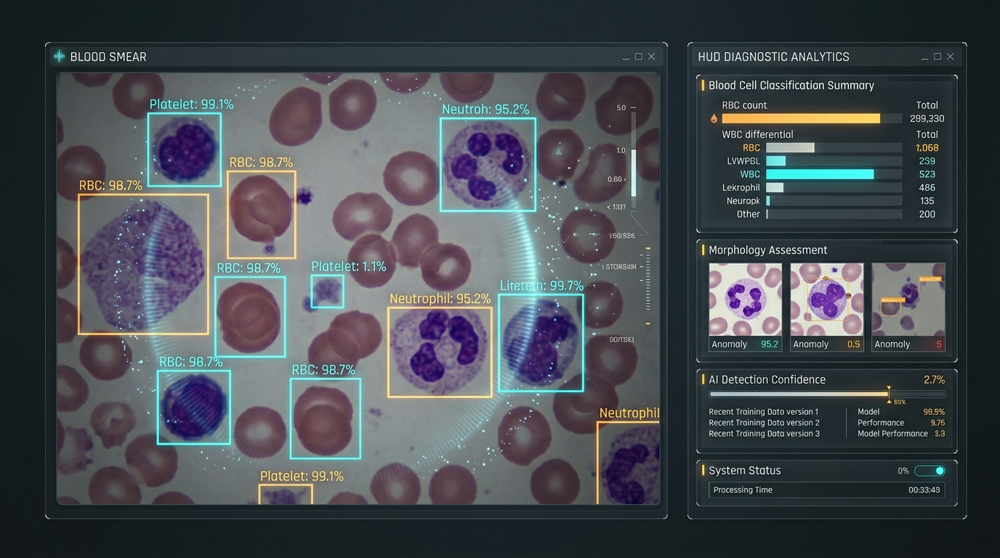
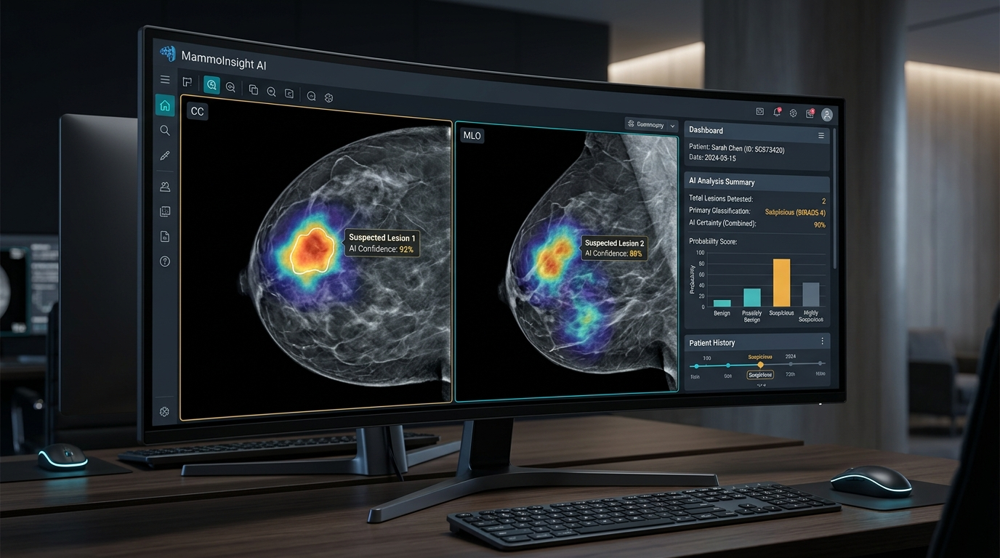
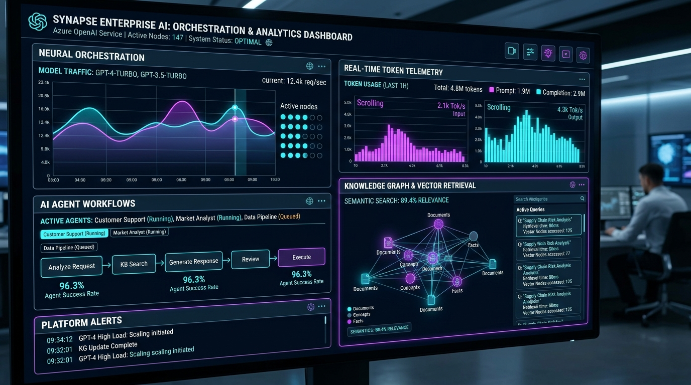

Medical AI
7+ Years Enterprise Experience at TCS
Designing the Future of
AI & Full-Stack Systems
Specialized in
Hi, I'm Muhammad Noukhez. A results-driven Software Engineer with over 7 years of deep enterprise experience at Tata Consultancy Services. Specializing in high-performance Python & FastAPI Architecture, Generative AI & LLMs (Azure OpenAI), Computer Vision (YOLO), and modern Full-Stack Website Development (React & Node.js).
Core Stacks:
Python & FastAPI
React & Node.js
GenAI & LLMs
Full-Stack Web
7+
Years of Excellence
FastAPI Microservices
React.js Web Apps
Node.js & Express
Python 3.12 Architecture
Azure OpenAI & LLMs
YOLOv8 Computer Vision
Full-Stack Website Dev
Docker Containerization
LangChain RAG
PostgreSQL & Redis
7+ Yrs Enterprise TCS
FastAPI Microservices
React.js Web Apps
Node.js & Express
Python 3.12 Architecture
Azure OpenAI & LLMs
YOLOv8 Computer Vision
Full-Stack Website Dev
Docker Containerization
LangChain RAG
PostgreSQL & Redis
7+ Yrs Enterprise TCS
Tata Consultancy Services (RnI / RnD)
Medical AI & CBC Detection
PyTorch Deep Learning
Pydantic v2 & AsyncIO
Redis Distributed Cache
Multi-Agent LLM Orchestration
GitOps & Cloud CI/CD
M.Tech CSE • Post-Graduate
RESTful & OpenAPI 3.0
Sub-15ms Low Latency
Tata Consultancy Services (RnI / RnD)
Medical AI & CBC Detection
PyTorch Deep Learning
Pydantic v2 & AsyncIO
Redis Distributed Cache
Multi-Agent LLM Orchestration
GitOps & Cloud CI/CD
M.Tech CSE • Post-Graduate
RESTful & OpenAPI 3.0
Sub-15ms Low Latency
0+
Years Experience
At TCS Enterprise Labs
0+
Projects Delivered
Scalable Applications
0+
ML & GenAI Models
Deployed in Production
0+
Core Tech Stacks
Mastered & Applied
Professional Profile
Architecting Software with Precision & Innovation
Bridging complex mathematical algorithms with scalable real-world business solutions.
About Muhammad
Senior Python Developer & AI Systems Specialist
I am a Senior Software Engineer based in Kolkata, India, with over 7 years of enterprise development experience at Tata Consultancy Services (TCS). My career spans impactful tenures within the prestigious Research and Innovation (RnI) and Research and Development (RnD) teams.
I specialize in harnessing Python's ecosystem to engineer cutting-edge solutions — from production-grade Azure OpenAI LLM architectures and Retrieval-Augmented Generation (RAG) to deep learning computer vision algorithms like YOLO for medical diagnostics.
class AI_SoftwareEngineer:
def __init__(self):
self.name = "Muhammad Noukhez"
self.company = "Tata Consultancy Services"
self.experience_years = 7
self.core_focus = [
"Azure OpenAI & GenAI",
"FastAPI & Enterprise Python",
"Computer Vision (YOLO)",
"Full-Stack Web (React & Node.js)"
]
self.passion = "Building impactful AI & scalable web systems"
def status(self):
return "Ready for mission-critical challenges"
# Initialize profile
engineer = AI_SoftwareEngineer()
print(engineer.status())
>>> "Ready for mission-critical challenges"Generative AI & LLMs
Azure OpenAI integration, prompt engineering, RAG pipelines, and automated business workflows.
Medical Computer Vision
Deep learning models for blood smear cell detection, malaria parasite classification, and oncology mammograms.
Scalable Python & FastAPI
Architecting high-throughput microservices with FastAPI, Flask, Django, SQL/NoSQL databases, and automated data engines.
Full-Stack Website Development
Building responsive, modern web applications with React, Node.js, and elegant UI design systems.
Let's Collaborate
Available for senior full-time roles, strategic consulting, and AI architecture projects.
Based in Kolkata, India • Open Worldwide
Technical Stack
Skills & Technological Arsenal
Proven proficiency across modern programming languages, AI frameworks, and cloud tools.
GenAI & LLMs
Expert
Azure OpenAI, prompt engineering, RAG architectures & enterprise workflows
Azure OpenAI
Specialist
GPT-4, enterprise integration, semantic orchestration, token budgeting
YOLO & Computer Vision
Advanced
Object detection, microscopic cell segmentation, OpenCV image pipelines
PyTorch & TensorFlow
Advanced
Deep neural networks, CNNs, model fine-tuning and evaluation
Scikit-learn
Expert
Classification, regression, clustering, feature engineering & hyperparameter tuning
Python 3.x
Expert (7+ Yrs)
Core OOP, concurrency, automation scripts, enterprise architecture
Java
Proficient
Object-oriented programming, data structures, algorithms
C++
Proficient
System programming, memory management, algorithmic problem solving
JavaScript & Web
Advanced
Modern ES6+, DOM manipulation, responsive UI, HTML5/CSS3
FastAPI
Expert
Asynchronous microservices, high throughput, Pydantic validation & automated OpenAPI docs
Flask Framework
Expert
Microservices, high-performance REST APIs, custom middleware, auth
Django Framework
Advanced
Full-stack web applications, ORM, Django REST framework, admin architecture
RESTful API Design
Expert
API design patterns, token authentication, rate limiting, OpenAPI/Swagger
MySQL & PostgreSQL
Advanced
Schema design, index optimization, complex joins, stored procedures
MongoDB
Advanced
NoSQL document modeling, aggregation pipelines, performance indexing
AWS & Cloud Services
Proficient
EC2, S3, RDS, Lambda functions, cloud monitoring & deployment
React.js
Advanced
Modern component architecture, hooks, state management, SPAs & virtual DOM
Node.js & Express
Advanced
Event-driven server runtime, REST APIs, asynchronous microservices & npm packages
Full-Stack Website Development
Expert (7+ Yrs)
End-to-end responsive web apps, frontend-backend integration, SEO & performance optimization
Modern HTML5, CSS3 & UI/UX
Expert
Modern glassmorphism, responsive grid layouts, micro-animations & accessible semantic HTML
Pandas & NumPy
Expert
Large-scale data manipulation, ETL pipelines, matrix calculations
OpenPyXL & Automation
Expert
Complex spreadsheet automation, reporting scripts, data validation engines
Docker & Containers
Advanced
Containerization, Docker Compose, microservice deployment, environment parity
Git & GitHub
Expert
Branching strategies, CI/CD integrations, code review workflows
PowerBI
Advanced
Interactive executive dashboards, DAX queries, enterprise analytics
Linux & Shell
Advanced
Bash scripting, server administration, cron automations, process management
Career Journey
Enterprise Experience at TCS
Over 7 consecutive years of continuous growth, research, and technical leadership.
2024 — 2025
Python Developer
Tata Consultancy ServicesLed the development and maintenance of high-throughput enterprise Python web applications, automated business data processing, and integrated robust data analytics pipelines.
- Application Engineering: Built modular and secure enterprise Python web applications utilizing the Flask framework.
- Data Analysis & Pipeline: Streamlined corporate data extraction, transformation, and automated analytics for operational stakeholders.
- Python Automation: Engineered custom automation scripts reducing manual effort by over 40% across business-critical tasks.
2023 — 2024
Research & Innovation (RnI)
Python Developer | ML & GenAI Specialist
Tata Consultancy ServicesCore contributor in the TCS Research & Innovation (RnI) team, architecting novel Generative AI and Machine Learning models to solve intricate enterprise business bottlenecks.
- Azure OpenAI LLM Solutions: Integrated and customized Azure OpenAI Large Language Models to formulate intelligent, domain-specific AI workflows.
- Machine Learning Prototyping: Designed and deployed predictive ML models with high accuracy and low inference latency.
- Full-Stack Python Frameworks: Built scalable RESTful services and interactive dashboards using Django and Flask.
- Innovation Benchmarking: Conducted cutting-edge experimentation with prompt tuning, token optimization, and AI agents.
2021 — 2023
Research & Development (RnD)
Python Developer
Tata Consultancy ServicesSpearheaded Python software engineering and API development within the Research & Development (RnD) team, designing database architectures and automation utilities.
- Backend Architecture: Developed resilient server-side components using Django and Flask for enterprise clients.
- Database Management: Managed complex schema designs, query tuning, and transactions across SQL and NoSQL engines.
- API Integration: Established secure third-party and internal API connections with robust error handling and monitoring.
- Process Improvement: Championed internal improvement initiatives, optimizing code review cycles and deployment efficiency.
2018 — 2020
IT Support Specialist
Tata Consultancy ServicesProvided mission-critical technical support, database administration, high-priority incident triage (P1/P2), and strict SLA compliance for global client applications.
- Incident & Change Management: Resolved critical P1/P2 issues swiftly while maintaining 99.8%+ SLA target rates.
- Database & Application Health: Monitored production systems, audited logs, and executed safe database schema maintenance.
- Business & Systems Analysis: Authored root cause analyses (RCA) and collaborated with development squads to eliminate recurring bugs.
Engineering & Research
Featured AI & Software Projects
Real-world AI implementations ranging from computer vision in medical diagnostics to enterprise GenAI architectures.
Healthcare AI

Oncology AI
Enterprise GenAIAzure OpenAI Enterprise Knowledge & Workflow Assistant
Scalable Generative AI engine built with Azure OpenAI Service and vector embeddings. Features intelligent document ingestion, hybrid search, context-aware query responses, and automated multi-step enterprise workflows.
Python
Azure OpenAI
LangChain
Flask API
Vector DB
Academic Credentials
Academic Foundation
Rigorous computer science curriculum backed by post-graduate and master's degrees.
2022 — 2024
Master of Technology (M.Tech)
Computer Science & Engineering
Kolkata, India
Advanced specialization in Machine Learning algorithms, Advanced Data Structures, Cloud Computing, and Neural Network Architectures.
Post-Graduate Excellence
2019 — 2022
Master of Computer Application (MCA)
Computer Science & Software Development
Kolkata, India
Comprehensive study of Database Management Systems, Enterprise Software Engineering, Distributed Systems, and Modern Programming Paradigms.
Master's Degree
2015 — 2018
Bachelor of Computer Application (BCA)
Computer Science
Patna, India
Foundational fundamentals of Computer Science, Object-Oriented Programming (C++, Java), Web Technologies, and Relational Database Systems.
Bachelor's Degree
Value Proposition
Core Engineering Strengths
What sets my engineering work apart in complex enterprise environments.
Python Engineering
Deep command over Python syntax, concurrency, design patterns, microservices architecture, and enterprise automation.
Machine Learning Systems
End-to-end ML lifecycle from exploratory data analysis and feature engineering to model training, evaluation, and production deployment.
Generative AI & LLMs
Designing real-world business solutions with Azure OpenAI, semantic retrieval, prompt design, and domain-tuned generative workflows.
Database Mastery
Expertise across relational (MySQL, PostgreSQL) and document databases (MongoDB) with emphasis on query optimization and indexing.
Algorithmic Problem Solving
Strong analytical aptitude honed over 7+ years solving high-stakes enterprise bottlenecks and architectural hurdles.
Cross-Functional Leadership
Proven track record of collaborating across multidisciplinary teams, mentoring emerging engineers, and championing best practices.
Let's Connect
Get in Touch With Me
Have a project, job opportunity, or technical challenge in mind? I'd love to discuss it with you.
Email Address
mnoukhej@gmail.com
Direct Phone / WhatsApp
+91 77177 47620
Location
Kolkata, West Bengal, India
Open to Hybrid, Remote & Relocation
Send a Direct Message
Fill in the form below and it will open your email client pre-formatted, or reach out directly.